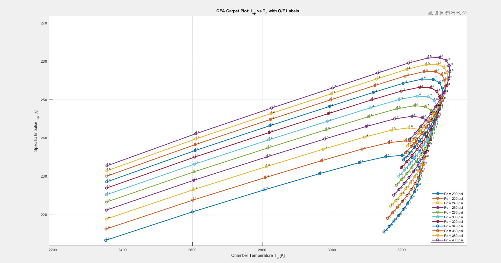
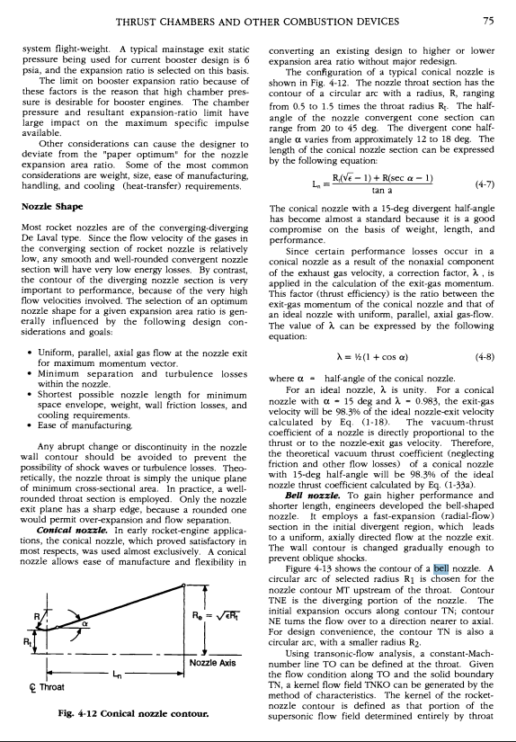
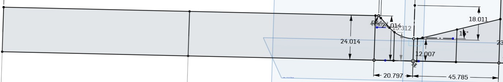
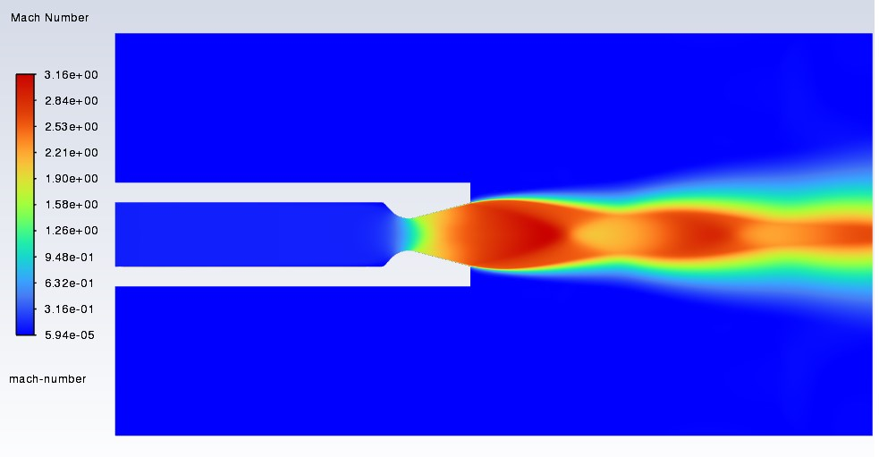
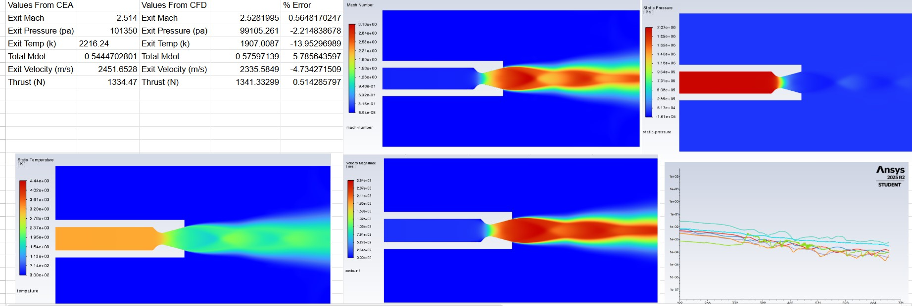

Phase 01
Engine Performance Trade Study

Engine development began with a series of NASA CEA trade studies used to compare candidate propellants and operating conditions. I developed a MATLAB workflow that organized the CEA output and generated a carpet plot showing the relationship between chamber temperature, specific impulse, chamber pressure, and oxidizer-to-fuel ratio.
The team used the resulting plot to select an operating point that balanced high specific impulse with manageable chamber temperature. After selecting the propellant combination, mixture ratio, and chamber pressure, the team established the target thrust and burn duration for the engine.
Phase 02
Nozzle Contour Design


Once the engine operating point was established, the nozzle geometry was developed using the methodology presented in Modern Engineering for Design of Liquid-Propellant Rocket Engines by Huzel and Huang.
The throat area was calculated using the selected thrust, chamber pressure, and thrust coefficient. The contraction ratio and expansion ratio were then used to determine the chamber area and exit area, followed by the throat, chamber, and exit diameters.
A 15-degree diverging half-angle and 30-degree converging half-angle were selected using the design recommendations in the reference. The corresponding converging and diverging section lengths were calculated and used to create the final nozzle contour in Onshape.
Phase 03
CFD Verification

The completed nozzle geometry was verified using a two-dimensional axisymmetric model in ANSYS Fluent. The simulation used the Species Transport model, with the combustion-product mixture defined using species mass fractions obtained from NASA CEA.
The model was used to evaluate the Mach number, static pressure, static temperature, velocity, mass flow rate, and thrust produced by the analytical nozzle design. The resulting flow field also provided detailed information about the expansion process and exhaust plume that could not be obtained from the one-dimensional calculations alone.
Phase 04
Analytical Validation

Validation Metrics
The CFD results were compared directly with NASA CEA predictions for exit Mach number, exit pressure, exit temperature, mass flow rate, exit velocity, and thrust.
The close agreement in exit Mach number and thrust demonstrated that the CFD model accurately reproduced the overall analytical nozzle performance. The validated geometry then became the baseline for the engine thermal and structural analyses.